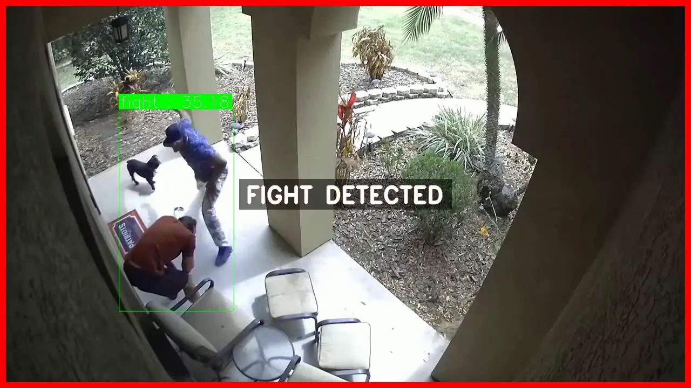

í•œêµì–´
í•œêµì–´
í•œêµì–´
í•œêµì–´

Violence and physical altercations in public spaces require immediate response, yet manual monitoring of large CCTV networks makes real-time human oversight impossible. This project develops a real-time fight detection system for the AXEyes video analytics platform, achieving 92.1% mAP by combining spatio-temporal action recognition with frame-sequence analysis. The core challenge is distinguishing genuine violent actions from visually similar non-violent interactions such as handshakes, hugging, or active sports movements — a problem that single-frame detection cannot reliably solve. The system treats fight detection as a temporal action, analyzing motion dynamics across consecutive frames to identify the aggressive, rapid, and irregular movement patterns characteristic of physical violence, reducing false alerts by 19%.
Spatio-Temporal Fight Detection: Violence is detected across consecutive frame sequences rather than single images, capturing the aggressive motion dynamics — rapid limb movement, body contact, irregular trajectories — that distinguish genuine fights from visually similar non-violent interactions.
92.1% mAP in Real-World Conditions: Achieved on a custom-curated CCTV surveillance dataset covering diverse fight scenarios under varied lighting, occlusion, camera angles, and crowd densities representative of real deployment environments.
19% False Alert Reduction: Frame-sequence confidence aggregation suppresses ambiguous detections caused by vigorous non-violent activity such as sports, dancing, or crowded scene movement, significantly reducing operator alert fatigue.
Production Deployment: Integrated into the AXEyes VA system monitoring 100+ critical infrastructure CCTV cameras across enterprise and government-level facilities.
Fight detection requires understanding how bodies move relative to each other over time, not just their appearance in a single frame. YOWOv3 combines a 3D CNN for temporal modeling across frame sequences with a 2D CNN for per-frame spatial feature extraction. This dual-stream architecture captures both the spatial positioning of individuals and the temporal motion dynamics of aggressive interactions, enabling reliable detection even in crowded, occluded, or low-light surveillance scenes.
A high-quality custom video dataset was curated from real CCTV footage covering diverse fight scenarios: one-on-one altercations, group fights, fights in crowded areas, and hard-negative samples including vigorous handshaking, sports activities, and crowd movement. Careful temporal annotation of fight onset, escalation, and resolution ensured the model learns precise action boundaries. Custom augmentations were applied including brightness and contrast variation for day/night CCTV conditions, horizontal flipping, temporal jitter, and partial occlusion simulation.
Single-frame detection of violence is unreliable due to visual similarity with non-violent high-energy activities. The system aggregates detection confidence scores across a temporal frame window before triggering an alert, filtering single-frame anomalies caused by sudden movements, lighting changes, or camera motion. This reduced false event alerts by 19% compared to per-frame inference, directly lowering operator workload in continuous monitoring deployments.
Given the computational demands of spatio-temporal 3D CNN training on large video datasets, Distributed Data Parallel (DDP) was implemented for multi-GPU training, significantly accelerating the training process and enabling faster iteration on dataset quality and augmentation strategies.
The fight detection model shares the YOWOv3 spatio-temporal architecture and training pipeline with the fall-down detection system, enabling efficient model management, joint dataset curation, and unified deployment under the AXEyes abnormal behavior detection module.
| Metric | Value |
|---|---|
| mAP | 92.1% |
| False Alert Reduction | 19% |
| Detection Type | Spatio-Temporal (multi-frame) |
| Training | Multi-GPU DDP |
| Deployment | AXEyes VA System |
| Monitored Cameras | 100+ critical infrastructure CCTV |